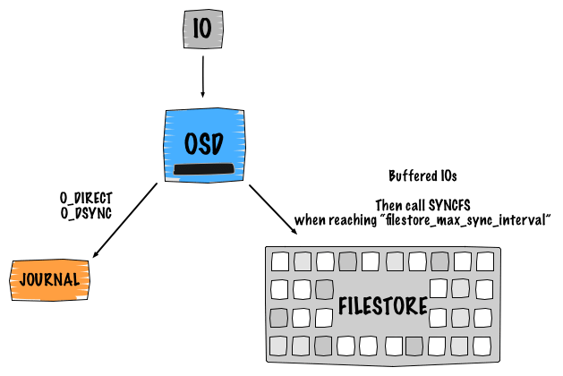
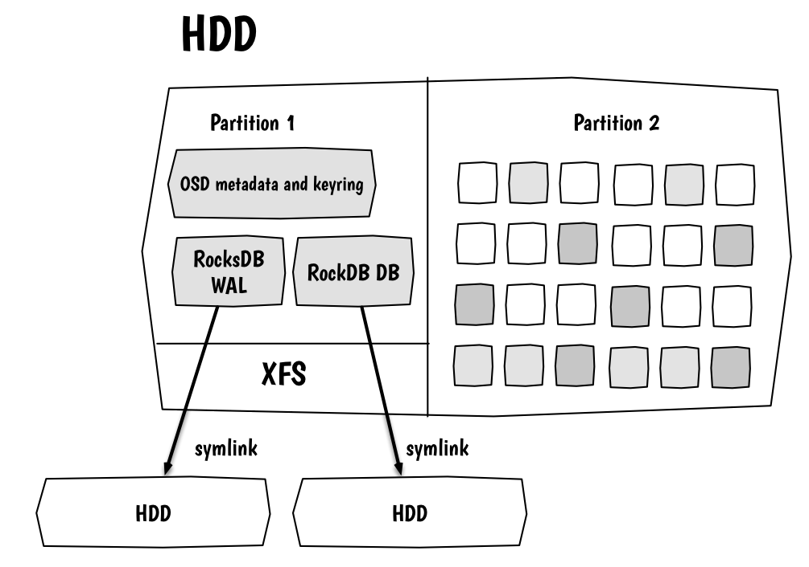
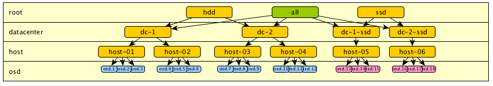
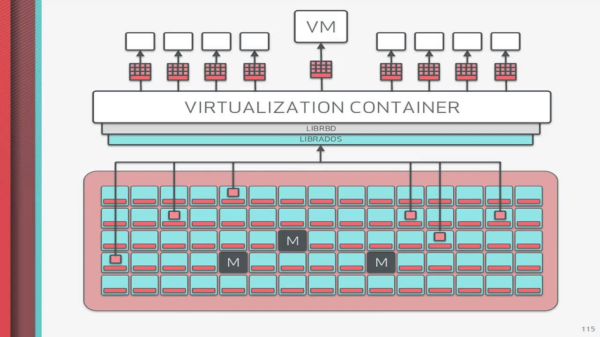

Plan ========= * distributed storage * ceph architecture * hw recommendations * tests * tupical issues * how to test --- Distributed storage =================== * Nodes/disks unreliable - data duplication * Self-recovery on node failure * CP vs AP - system behaviour in case of failure --- Comparision =========== * local hdd * cinder + lvm + iscsi * ceph * glusterfs * netapp & Co --- Ceph ==== * rados * rbd * cephfs * radosgw (S3/Swift) * iscsi gateway * ... <center><img src="images/ceph-all-api.png" width="400"></center> --- Ceph config & co ================ * /etc/ceph/ceph.conf * /etc/ceph/ceph.client.admin.keyring ```bash # ll /var/run/ceph total 0 drwxrwx--- 2 ceph ceph 100 Jun 25 20:04 ./ drwxr-xr-x 24 root root 900 Jun 25 20:15 ../ srwxr-xr-x 1 ceph ceph 0 Jun 25 20:04 ceph-mgr.ceph-lum0.asok= srwxr-xr-x 1 ceph ceph 0 Jun 25 20:04 ceph-mon.ceph-lum0.asok= srwxr-xr-x 1 ceph ceph 0 Jun 25 20:04 ceph-osd.0.asok= ``` --- Ceph config & co ================ ```bash # ll /var/log/ceph total 59416 drwxrwx--- 2 ceph ceph 4096 Nov 27 2017 ./ drwxrwxr-x 10 root syslog 4096 Dec 1 2017 ../ -rw------- 1 ceph ceph 49611 Jun 25 20:05 ceph.audit.log -rw------- 1 ceph ceph 492853 Jun 25 20:05 ceph.log -rw-r--r-- 1 ceph ceph 16326525 Jun 25 20:20 ceph-mgr.ceph-lum0.log -rw-r--r-- 1 ceph ceph 16401900 Jun 25 20:20 ceph-mon.ceph-lum0.log -rw-r--r-- 1 ceph ceph 27505663 Jun 25 20:05 ceph-osd.0.log -rw-r--r-- 1 root root 20750 Jun 25 20:04 ceph-osd.admin.log ``` --- ceph -s ======= ```bash # export CEPH_ARGS="-c /etc/ceph-lum/ceph.conf -k /etc/ceph-lum/ceph.client.admin.keyring" # ceph -s cluster: id: 1062565d-07df-4f01-9640-e89b7ae5ed4d health: HEALTH_WARN too many PGs per OSD (234 > max 200) services: mon: 3 daemons, quorum ceph-lum1,ceph-lum0,ceph-lum2 mgr: ceph-lum1(active), standbys: ceph-lum2, ceph-lum0 osd: 3 osds: 3 up, 3 in data: pools: 3 pools, 320 pgs objects: 0 objects, 0 bytes usage: 5176 MB used, 58008 MB / 63184 MB avail pgs: 320 active+clean ``` --- Mon === * ceph-mon process, 2N+1 * tolerate N node failures, N+1 failure - cluster totally down * supply all other components (and clients) with current cluster config * Store and replicate cluster meta-info * osd status * crush tree * pools/PG status/settings * auth keys * etc * all monitors are replicating this info using paxos * One monitor primary - other folowers --- Mon db ====== ```bash ~ ᐅ ceph config-key list [ "initial_mon_keyring" ] ~ ᐅ ceph config-key put x 1 set x ~ ᐅ ceph config-key get x obtained 'x' 1% ~ ᐅ ceph config-key put x 1 ~ ᐅ ceph config-key list [ "initial_mon_keyring", "x" ] ``` --- Mon CLI ======= ```bash # ceph daemon mon.ceph-lum0 mon_status { "name": "ceph-lum0", "rank": 1, "state": "peon", "election_epoch": 120, "quorum": [ 0, 1, 2 ], ... ``` --- Mon CLI ======= ```bash root@ceph-lum0:/home/koder# ceph daemon mon.ceph-lum0 help { "add_bootstrap_peer_hint": "add peer address ... "config diff": "dump diff of current config ... "config diff get": "dump diff get <field>: ... "config get": "config get <field>: get the ... "config help": "get config setting schema and ... "config set": "config set <field> <val> [<val> ... "config show": "dump current config settings", ``` --- Data location ============= * objects * PG * pools * Crush --- Object ====== * string name * one chunk of data * attributes * rados list .... --- PG == * Box for set of objects * Fixed PG count (can be increased, but this is heavy-load operation) * PG beelong to set of OSD (primary + replicas) * Track history and state --- PG info ======= ```bash # ceph pg 4.1a query { "state": "active+clean", "up": [2, 0, 1], "acting": [2, 0, 1] "info": { "pgid": "4.1a", "last_update": "0'0", "last_complete": "0'0", .... 100th more lines } # ceph pg map 4.1a osdmap e157 pg 4.1a (4.1a) -> up [2,0,1] acting [2,0,1] # ceph pg dump MANY_MANY_JSON_LINES ``` --- PG history ========== * PG is a minimal unit to track history * For each time interval there a OSD's which responcible for PG in this interval * In order PG to be clean for each intervals at least min_size OSD from this period needs to be UP * Current OSD replicates history from old owners and became owner of part of history Pool ==== * Set of PG's with the same settings * Has name, location and replication settings * size/min_size --- Pools ===== ```bash # ceph osd pool create test 64 64 # ceph osd pool delete test test --yes-i-really-really-mean-it # rados df POOL_NAME USED OBJECTS CLONES COPIES rbd 36 4 0 12 MISSING_ON_PRIMARY UNFOUND DEGRADED RD_OPS RD WR_OPS WR 0 0 0 124 106k 12 4096 total_objects 4 total_used 5181M total_avail 58003M total_space 63184M ``` --- Pools ===== ```bash # rados -p rbd ls - rbd_header.58e9f74b0dc51 rbd_directory rbd_info rbd_id.foo # rados -p foo put myobject blah.txt # rados -p foo mksnap mysnap # rados -p foo rm myobject # rados -p foo -s mysnap get myobject blah.txt.old ``` --- OSD === * RPC server, responsible for 1 storage device * 2-4 OSD per SSD/NVME * No RAID, please, except for 1 disk RAID0 (for cache) * Quite slow (but good for HDD) --- OSD - Filestore =============== * XFS filesystem, mounted to /var/lib/ceph/osd/$CLUSTER-$OSDID * pools+pgs > directories, objects > files * file attributes & leveldb data - object attributes * Journal (WAL - write ahead log)  --- OSD - Bluestore =============== * small info partition on /var/lib/ceph/osd/$CLUSTER-$OSDID * block -> data partition * block.db - rocksdb device * block.wal - wal device  --- OSD - Store algorithm ===================== * Monitors keeps osd tree * For each PG there a primary OSD and secondary * All writes goes via primary OSD only * Primary OSD: - serializes writes for PG using lock - Primary OSD send replica to peers - Primary OSD commmit to journal - Primary OSD wait for peer to ack - Ack to client --- RadosGW ======= * SWIFT/S3 -> rados --- MGR === * ceph-mgr, cluster info, python (used to be part of mon) --- MDS === * cephfs coordinator --- Crush ===== * Simple programming language for data distribution * Large tree, which has osd's in leafs * Failure domains as levels of tree * For each PG tree traversed from top to find OSD's where this PG would be located --- Crush ===== <center><img src="images/crush.png" width="600"></center> --- Crush ===== <center></center> --- --- osd tree ======== ```bash root@ceph-lum0:/home/koder# ceph osd tree ID CLASS WEIGHT TYPE NAME STATUS REWEIGHT PRI-AFF -1 0.06116 root default -3 0.02039 host ceph-lum0 0 hdd 0.02039 osd.0 up 1.00000 1.0000 -5 0.02039 host ceph-lum1 2 hdd 0.02039 osd.2 up 1.00000 1.0000 -7 0.02039 host ceph-lum2 1 hdd 0.02039 osd.1 up 1.00000 1.0000 ``` --- Crush cli ========= ```bash # ceph osd getcrushmap -o /tmp/cr 5 # crushtool -d /tmp/cr -o /tmp/cr.txt # vim /tmp/cr.txt # crushtool -c /tmp/cr.txt -o /tmp/cr2 # ceph osd setcrushmap -i /tmp/cr ``` --- cat /tmp/cr.txt =============== ```bash # begin crush map tunable choose_local_tries 0 tunable choose_local_fallback_tries 0 tunable choose_total_tries 50 tunable chooseleaf_descend_once 1 tunable chooseleaf_vary_r 1 tunable chooseleaf_stable 1 tunable straw_calc_version 1 tunable allowed_bucket_algs 54 # devices device 0 osd.0 class hdd device 1 osd.1 class hdd device 2 osd.2 class hdd ``` --- ```bash # types type 0 osd type 1 host type 2 chassis type 3 rack type 4 row type 5 pdu type 6 pod type 7 room type 8 datacenter type 9 region type 10 root ``` --- ```bash # buckets host ceph-lum0 { id -3 # do not change unnecessarily id -4 class hdd # do not change unnecessarily # weight 0.020 alg straw2 hash 0 # rjenkins1 item osd.0 weight 0.020 } host ceph-lum1 { id -5 # do not change unnecessarily id -6 class hdd # do not change unnecessarily # weight 0.020 alg straw2 hash 0 # rjenkins1 item osd.2 weight 0.020 } host ceph-lum2 { id -7 # do not change unnecessarily id -8 class hdd # do not change unnecessarily # weight 0.020 alg straw2 hash 0 # rjenkins1 item osd.1 weight 0.020 } ``` --- ```bash root default { id -1 # do not change unnecessarily id -2 class hdd # do not change unnecessarily # weight 0.061 alg straw2 hash 0 # rjenkins1 item ceph-lum0 weight 0.020 item ceph-lum1 weight 0.020 item ceph-lum2 weight 0.020 } # rules rule replicated_rule { id 0 type replicated min_size 1 max_size 10 step take default step chooseleaf firstn 0 type host step emit } # end crush map ``` --- Crush ===== * different types of disks in one tree - performance issue * tree for different drive types * more PG - better performance * change OSD weight - move PG * 300-100 PG per OSD for all pools * PG requires a ram and time to track history and recovery * All ops to single pg executed sequntially - so PG might be a blocker --- ```bash # ceph osd lspools 1 test,4 default.rgw.buckets.index, 5 default.rgw.buckets.extra, root@ceph-lum0:/home/koder# ceph osd dump epoch 144 fsid 1062565d-07df-4f01-9640-e89b7ae5ed4d created 2017-11-27 01:59:33.609244 modified 2018-06-25 20:04:29.687389 flags sortbitwise,recovery_deletes,purged_snapdirs crush_version 5 full_ratio 0.95 backfillfull_ratio 0.9 nearfull_ratio 0.85 require_min_compat_client jewel min_compat_client jewel require_osd_release luminous ``` --- ```bash pool 4 'default.rgw.buckets.index' replicated size 3 min_size 2 crush_rule 0 object_hash rjenkins pg_num 32 pgp_num 32 last_change 51 flags hashpspool stripe_width 0 ... max_osd 3 osd.0 up in weight 1 up_from 142 up_thru 142 down_at 139 last_clean_interval [124,138) 192.168.122.126:6800/1270 192.168.122.126:6801/1270 192.168.122.126:6802/1270 192.168.122.126:6803/1270 exists,up 94b7c3cf-6538-4a58-a490-186fa0ffa578 ... ``` --- Cluster health algorithm ======================== * OSD watch after each other * OSD reports to mon about peers down for 30s * Mon mark OSD's as down * Mon mark OSD as out after 300s * Crush recalculate new PG allocation * New owners of PG's from failed OSD's making it copy --- auth ==== ```bash # ceph auth list root@ceph-lum0:/home/koder# ceph auth list installed auth entries: osd.0 key: AQAXVxtaNS2MJBAAvbLQQxXkwpa9KClJ2SpgHA== caps: [mgr] allow profile osd caps: [mon] allow profile osd caps: [osd] allow * client.admin key: AQBmVRtasIv4GhAA8F/IA23pclubUy1a5tzblA== caps: [mds] allow * caps: [mgr] allow * caps: [mon] allow * caps: [osd] allow * mgr.ceph-lum0 key: AQBsVRta8/VwDRAAxwR+jnQGQujdJWeuwGcXYw== caps: [mds] allow * caps: [mon] allow profile mgr caps: [osd] allow * ``` --- auth ==== ```bash # cat /var/lib/ceph/osd/ceph-0/keyring [osd.0] key = AQAXVxtaNS2MJBAAvbLQQxXkwpa9KClJ2SpgHA== # cat /var/lib/ceph/mon/ceph-ceph-lum0/keyring [mon.] key = AQArJRRaAAAAABAAU6PSq2wxM9crlvDfTuHINA== caps mon = "allow *" # cat /etc/ceph/ceph.client.admin.keyring [client.admin] key = AQBmVRtasIv4GhAA8F/IA23pclubUy1a5tzblA== ``` --- RBD === * 4M blocks per object <center></center> --- RBD === ```bash ~ ᐅ ceph osd pool create rbd 64 64 ~ ᐅ ceph osd pool application enable rbd rbd ~ ᐅ rbd pool init rbd ~ ᐅ rbd list ~ ᐅ rbd create foo --size 1024 ~ ᐅ rbd list foo ~ ᐅ rbd info foo rbd image 'foo': size 1024 MB in 256 objects order 22 (4096 kB objects) block_name_prefix: rbd_data.58e9f74b0dc51 format: 2 features: layering, exclusive-lock, object-map, fast-diff, deep-flatten flags: create_timestamp: Mon Jun 25 21:41:38 2018 ``` --- ```bash ~ ᐅ sudo rbd map foo rbd: sysfs write failed RBD image feature set mismatch. You can disable features unsupported by the kernel with "rbd feature disable ... rbd: map failed: (6) No such device or address ~ ᐅ rbd feature disable foo object-map ... ~ ᐅ sudo rbd map foo /dev/rbd0 ~ ᐅ ls -l /dev/rbd0 brw-rw---- 1 root disk 252, 0 Jun 25 21:45 /dev/rbd0 ~ ᐅ iostat -xd /dev/rbd0 Device r/s w/s rkB/s wkB/s ... rbd0 0.00 0.00 0.01 0.00 ... ~ ᐅ sudo rbd unmap /dev/rbd0 ``` --- RadosGW ======= --- configs ======= ```bash # ceph tell 'mon.*'' injectargs version # ceph tell 'osd.*' injectargs "--XXX YYY" ``` --- Flags ===== * noout * nodown * noup * noin * norecover * nobackfill --- Hardware settings ================= * net - cluster/replication/recovery net (south-north) - client net (east-west) * disks * OS